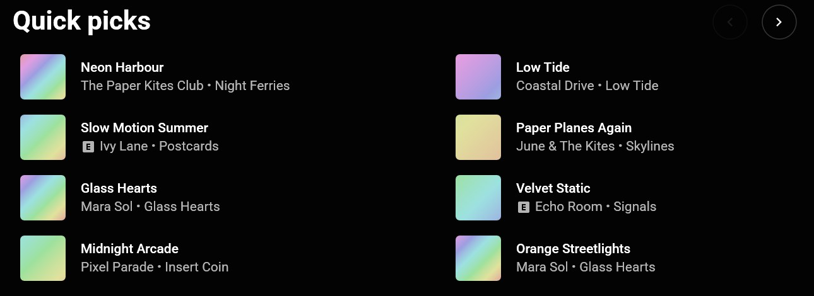
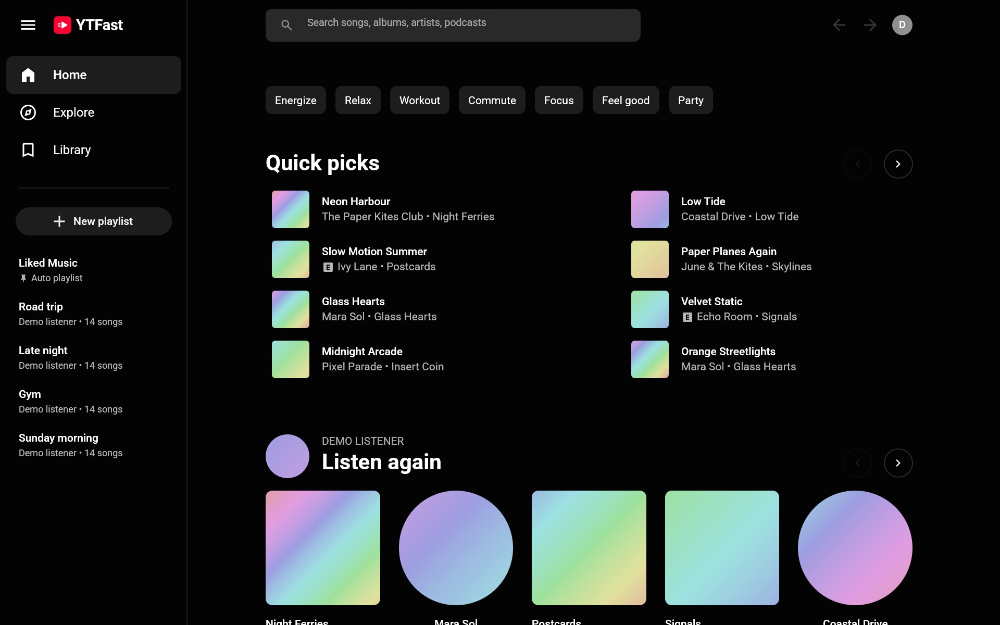
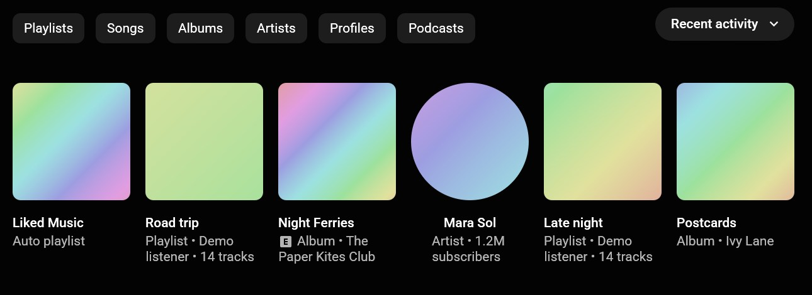

Every screen you know
Home, Explore, Library, search, albums, artists, playlists and moods, laid out the way YouTube Music lays them out.

A native desktop app for YouTube Music on Windows and Mac. Songs start in about a second, and it uses no CPU at all while paused.
Free for 14 days, then US$4 once. Needs YouTube Music Premium.

More than 30 preorders and reservations at UNSW Founders Demo Day, before the public launch. Read the story
Your library, your mixes and your lyrics, in an app that opens at once and stays out of the way.
Home, Explore, Library, search, albums, artists, playlists and moods, laid out the way YouTube Music lays them out.

~1s
The song under your pointer and the top search result are made ready ahead of time.
0%
And under 200 MB of memory while it plays, because there is no browser underneath.
Liked songs, playlists, albums and artists. Make and edit playlists, save albums and follow artists.

Shortcuts to play, seek, change the volume, search and like songs, plus your media keys and your computer's media controls.
The line being sung is lit. Click any line to jump there. The player takes its colours from the cover.
YTFast uses the YouTube Music sign-in already in your browser. It stays on your computer and only goes to YouTube.
Speed and memory figures are our own measurements. Yours will vary with your computer and your connection.
A browser tab is a whole browser's worth of machinery to play one song. Close it and the music stops. Leave it open and it keeps working in the background.
YTFast is only a music player, so it can be a small one.
| Measure | YouTube Music in a browser | YTFast |
|---|---|---|
| Runs as | A web page inside your browser | Its own app |
| While paused | Still uses the browser's CPU | 0% CPU |
| Memory | Whatever the browser takes | Under 200 MB |
| Closing the browser | Stops the music | Doesn't matter |
YouTube Music on a computer is a browser tab, and a browser tab is a lot of machinery for playing songs. I wanted a player that opens at once and costs my laptop almost nothing while it sits in the background.
I started building YTFast in April 2026. At UNSW Founders Demo Day it collected more than 30 preorders and reservations, and version 0.5 is now out for Windows and Mac.
If something breaks, or there's a feature you want, email me at founder@ytmfast.com.
Every download is the full, latest version. Use it free for 14 days, then pay once to keep it. No subscription.
$0 for 14 days
The whole app, to try on your own music.
$4 USD, once
Keep YTFast after the trial.
Checkout with PayPal, by card or balance. Pre-ordered at Demo Day? You already have Pro.
Need a fast desktop app like this for your company? We build custom apps in Rust.
Free for 14 days, then US$4 once.